Удалённый вход по SSH
1. MobaXterm
MobaXterm — это мощный инструмент удалённого доступа, объединяющий в себе SSH, VNC, FTP и другие средства удалённой работы.
2. Установка MobaXterm
Официальный сайт: https://mobaxterm.mobatek.net/
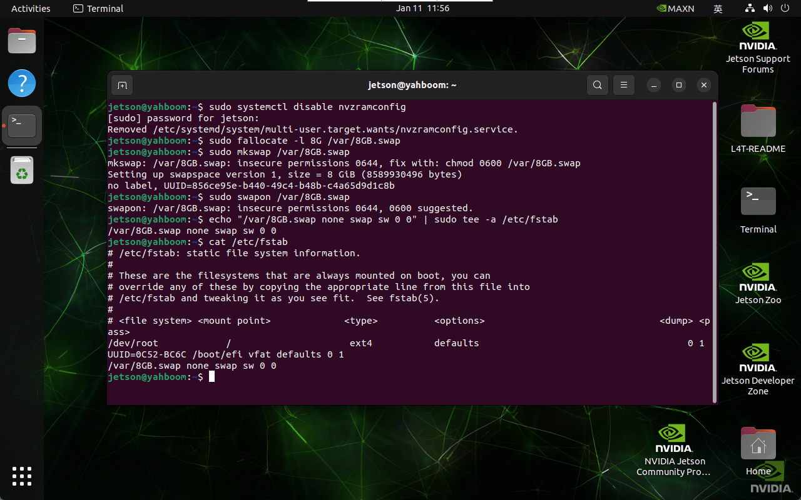
2.1. Скачивание MobaXterm
Выберите бесплатную версию для скачивания:
Выберите версию с установщиком (Installer edition) для скачивания:
2.2. Установка MobaXterm
Распакуйте скачанный с официального сайта архив и запустите файл MobaXterm_installer_24.4.msi для установки:
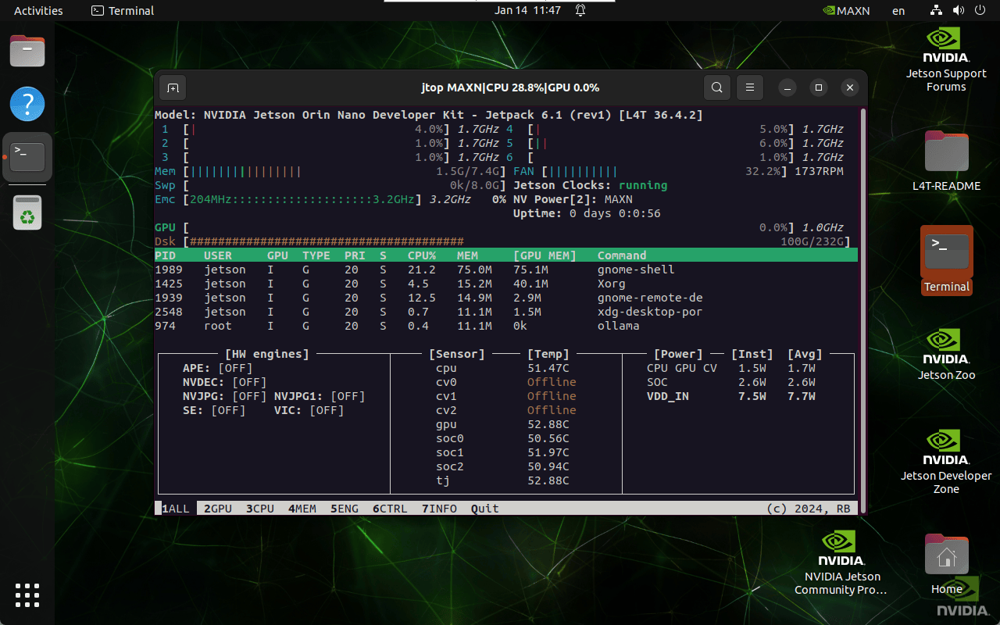
Примите условия соглашения:
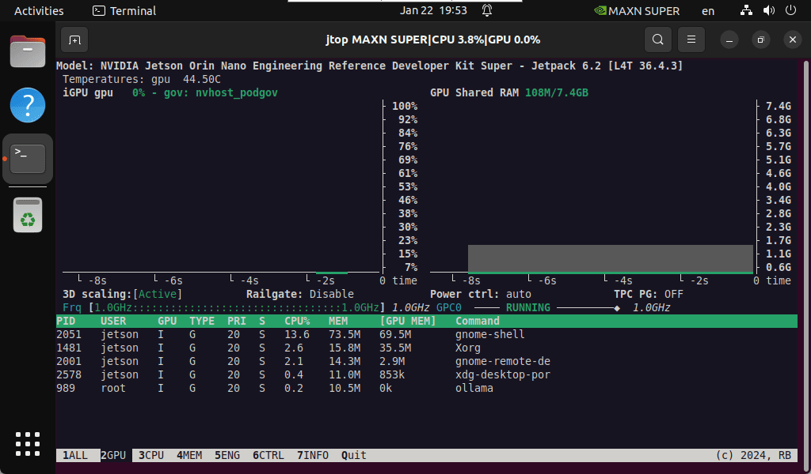
Выберите место установки программы: рекомендуется оставить путь по умолчанию
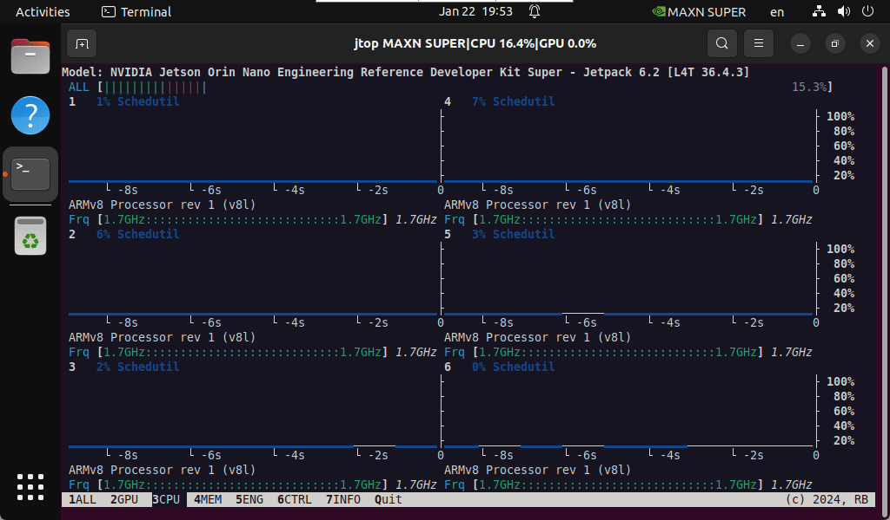
Установка:
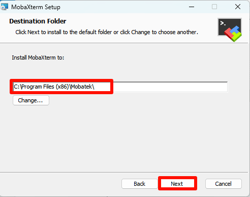
Завершение установки:
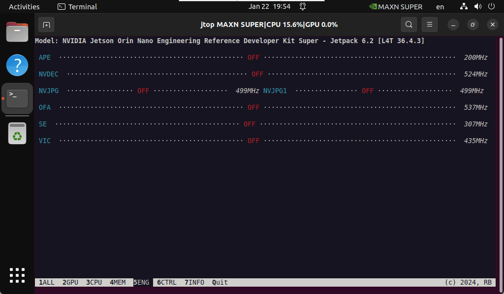
3. Использование MobaXterm
Найдите на рабочем столе значок MobaXterm и откройте его:
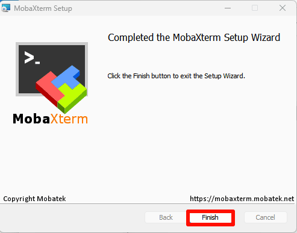
4. MobaXterm: удалённое подключение по SSH
Выберите Session → SSH: укажите IP-адрес удалённого устройства и имя пользователя.
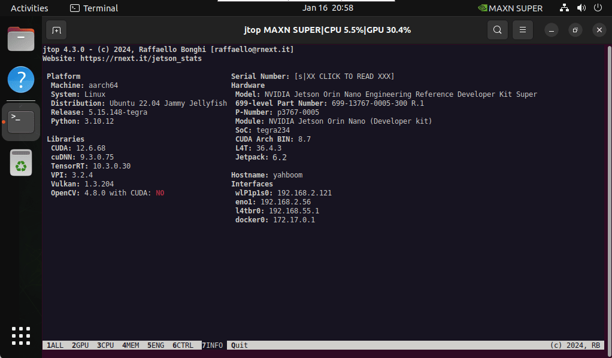
Стандартные учётные данные материнской платы Jetson:
Имя пользователя: jetson
Пароль: yahboom
Примечание: при подключении по SSH MobaXterm автоматически откроет удалённый вход по SFTP в боковой панели.
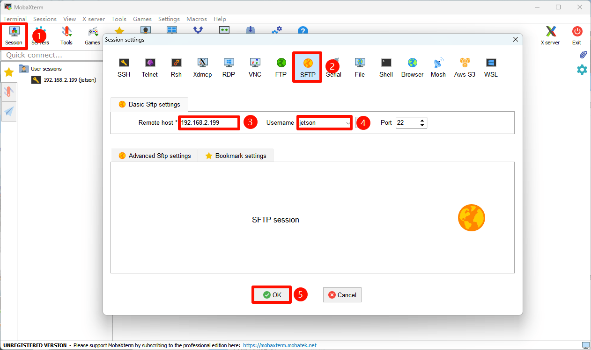
Введите пароль пользователя: окно ввода пароля не будет отображать вводимые символы. После ввода пароля нажмите Enter!
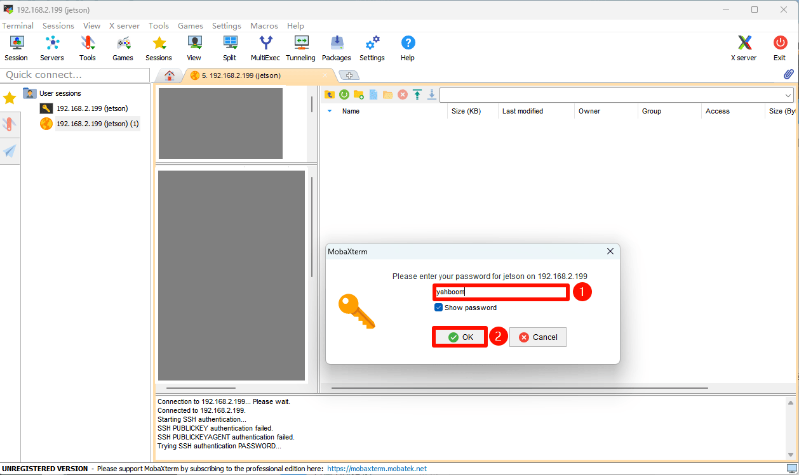
Сохранение пароля: сохранять пароль не рекомендуется
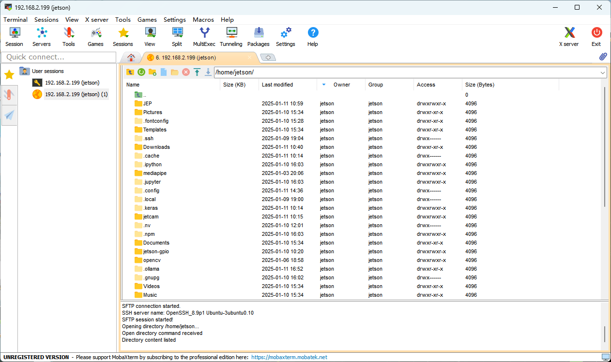
Завершение подключения по SSH:
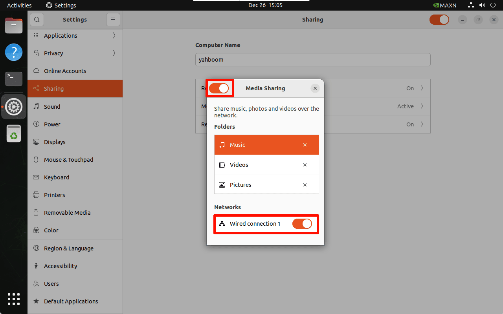
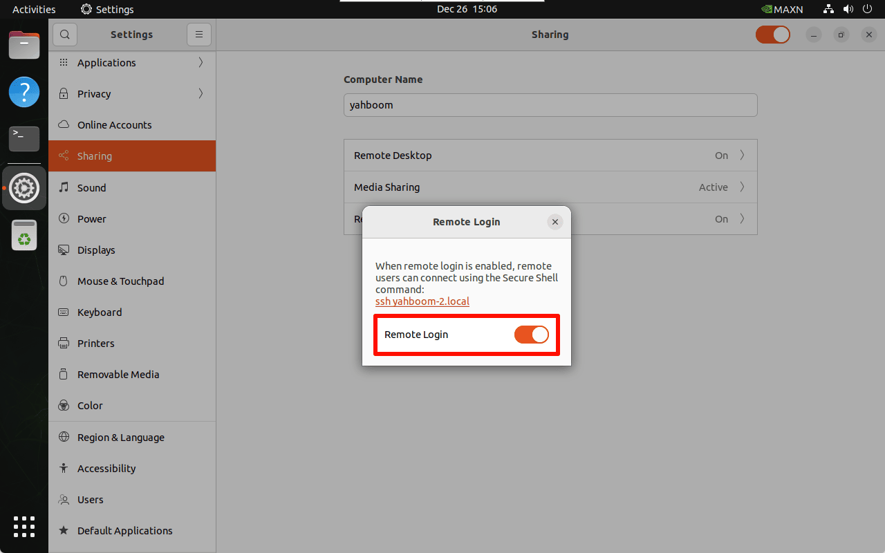